Թեստ 52
30:00
1. Հողային ծածկույթով ճանապարհից դուրս գալով ասֆալտբետոնե ծածկույթ ունեցող ճանապարհ

2. Նշվածներից ո՞ր անշարժ օբյեկտը արգելք չի հանդիսանում
3. Ավտոբուսների շահագործումն արգելվում է, եթե՝
4. Կողային կցորդով մոտոցիկլների շահագործումն արգելվում է, եթե`
5. Դուք սկսում եք երթևեկել ճամփեզրից, պարտավո՞ր եք արդյոք զիջել ճանապարհը թեթև մարդատար ավտոմոբիլին, որը կատարում է հետադարձ:
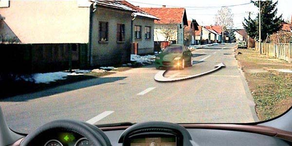
6. Նշաններից ո՞րն է ցույց տալիս արգելքի շրջանցումն աջից կամ ձախից:
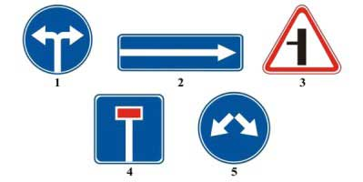
7. Խաչմերուկն առաջինը կանցնի`
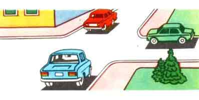
8. Ո՞ր տրանսպորտային միջոցի վարորդն ունի երթևեկության առավելություն:
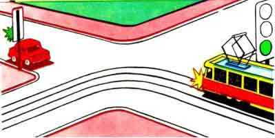
9. Զիջել ճանապարհը բեռնատարի վարորդին
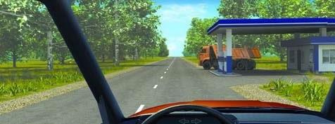
10. Ձախ շրջվելիս պարտավոր ենք զիջել ճանապարհը
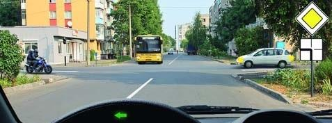
11. Վազանցն այս գծանշմամբ
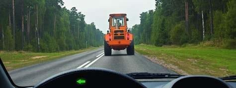
12. Որ նկարում է վարորդը ճիշտ կատարել կանգառ` ուղևորներ իջեցնելու համար:
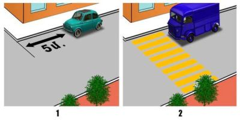
13. Մեխանիկական տրանսպորտային միջոցների մասնակի բեռնումով քարշակման ժամանակ ուղևորների փոխադրում թույլատրվում է`
14. Լուսնասպիտակ գույնի առկայծող փարոսիկները միացրած տրանսպորտային միջոցի վարորդը տալիս է հատուկ ձայնային ազդանշան, որպեսզի`
15. Թույլատրվու՞մ է արդյոք մուտք գործել երկաթուղային գծանց տվյալ իրավիճակում:
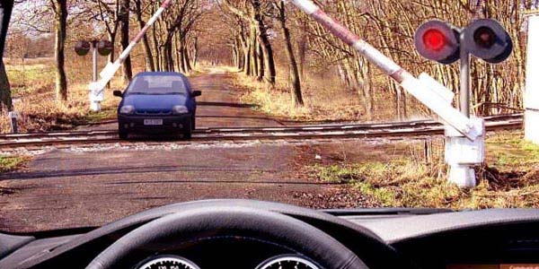
16. Ո՞ր ուղղությամբ կարող եք շարունակել երթևեկությունն այս խաչմերուկում, եթե վարում եք 3.5 տոննա թույլատրելի առավելագույն զանգվածով բեռնատար ավտոմեքենա
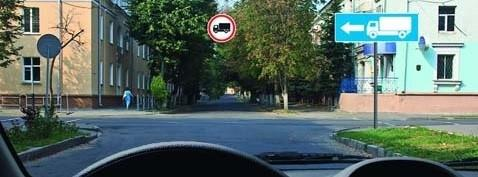
17. Ո՞ր նշաններն են թույլատրում հետադարձը
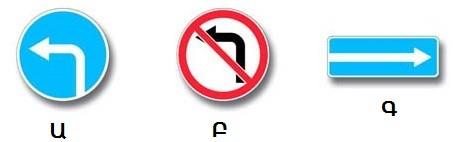
18. Լուսացույցի կանաչ ազդանշանին պատկերված սլաքները տեղեկացնում են
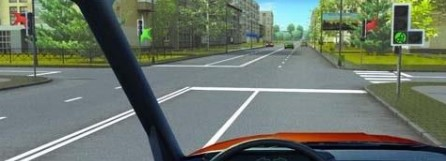
19. Եթե անմիջապես խաչմերուկից հետո մտադրվել եք կանգառ կատարել երթևեկության մասնակիցներին շփոթության մեջ չգցելու նպատակով, երբ պետք է միացնեք աջ շրջադարձի լուսային ցուցիչը
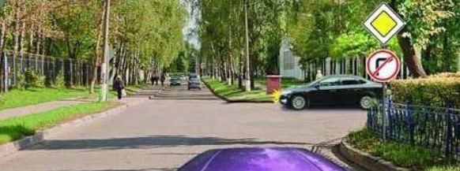